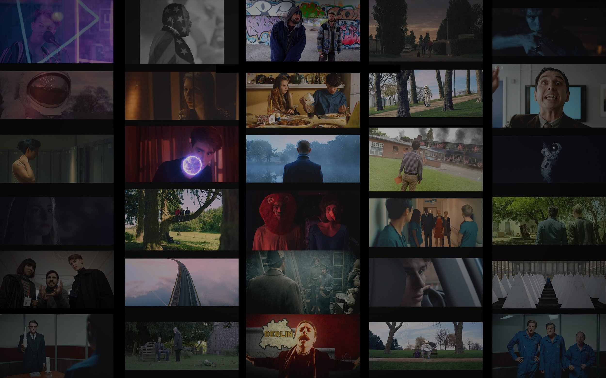

IT MAY BE CLICHED, BUT IT IS TRUE FOR ME, I LOVE FILMS. NOT IN A JIM-CAREY-CABLE-GUY-KIND-OF-WAY, BUT PRETTY CLOSE. AS AN EDITOR I’VE BEEN FORTUNATE TO HAVE THE CHANCE TO MAKE THAT OBSESSION PART OF MY CAREER.
IN MY 17 YEARS EDITING PROFESSIONALLY MY SCRIPTED TELEVISION WORK HAS BEEN NOMINATED MULTIPLE TIMES AT BAFTA – WINNING ONCE IN 2018. MY FEATURE AND SHORT FILM WORK HAS PLAYED AT FESTIVALS AND WON AWARDS INTERNATIONALLY.
IN 2025 I EDITED 3 EPISODES FOR THE FINAL SEASON OF LONG RUNNING SMASH-HIT COMEDY-DRAMA “BRASSIC” FOR CALAMITY FILMS / SKY / NETFLIX INCLUDING THE INCREDIBLE SEASON FINALE.
SINCE THE BEGINNING OF 2026 I’VE BEEN EDITING 3 EPISODES FOR THE UPCOMING 3RD SEASON OF POPULAR DRAMA “SHERWOOD” FOR HOUSE PRODUCTIONS / BBC. DUE TO AIR TOWARDS THE END OF THE YEAR.
THE AIM OF THIS WEBSITE IS TO MEET FILMMAKERS WHO WANT TO MAKE GREAT FILMS AND TV SHOWS THAT CONNECT WITH PEOPLE. I LOVE HEARING NEW IDEAS AND HELPING TO EXPAND UPON THEM IN A MEANINGFUL AND UNIQUE WAY. IF YOU WANT TO COLLABORATE WITH SOMEONE WHO IS HONEST, DEDICATED, FAST, INTUITIVE AND LIKES TO THINK A LITTLE DIFFERENTLY, PLEASE GET IN TOUCH.
"WANNA TAKE A RIDE?"